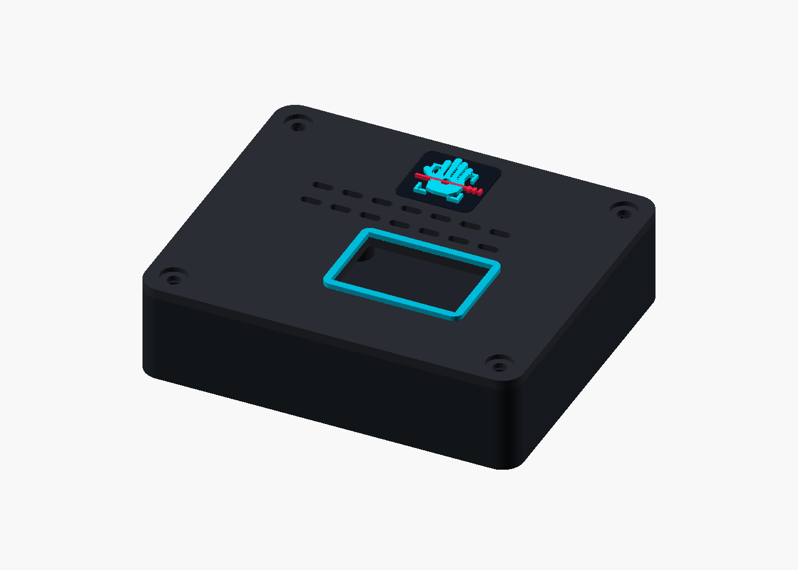
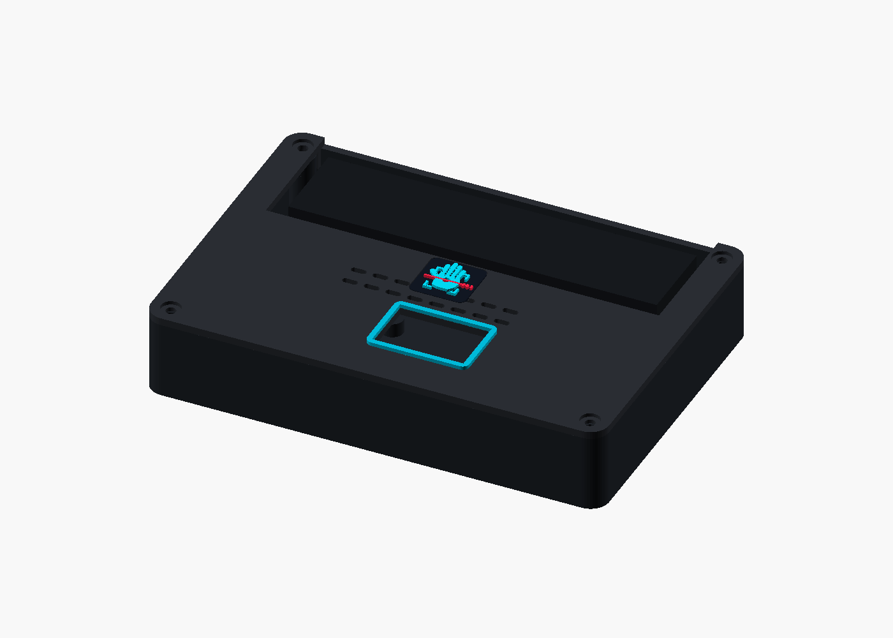
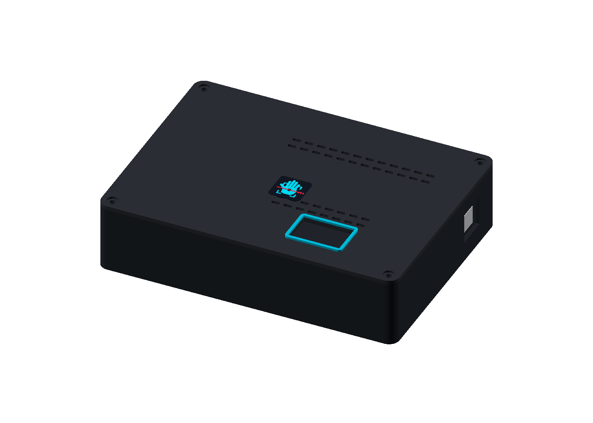

UNO Q Case
The smallest design. The hub stays outside the enclosure and connects through the UNO Q USB-C opening.
Download its print filesBuild your own
Every option protects the Arduino UNO Q and keeps its Matrix visible. The difference is where the Arduino USB-C hub lives and which cables need direct access.

The smallest design. The hub stays outside the enclosure and connects through the UNO Q USB-C opening.
Download its print files
The original low-profile dock keeps the hub visible in an open rear service bay for a fixed cable layout.
Download its print files
The photo-validated enclosed dock adds room for the hub cable, real plug bodies, board mounts, and a freely closing lid.
Download its print filesChoose one structural base, one matching lid, and one matching branding set. A fit coupon is a small test print for a plug opening or cradle—it is not installed in the finished case. Print the relevant coupon first to check your real hardware, then set it aside. The large target badge is an optional decoration and does not fit a lid recess.
The starting profile targets an Anycubic Kobra 3, PLA, a 0.4 mm nozzle, and 0.20 mm layers. Other printers can use the same geometry after checking clearances.